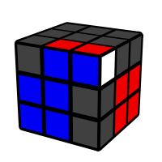

F2L (First Two Layers)
Después de armar la cruz base, hay que ir juntando cada arista con su esquina, una vez están unidas las 2 piezas, se insertan en su esquina y se busca el siguiente par
Protip: Este paso es el más importante de los 4, experimenta juntar las piezas desde diferentes ángulos para tener mejores tiempos